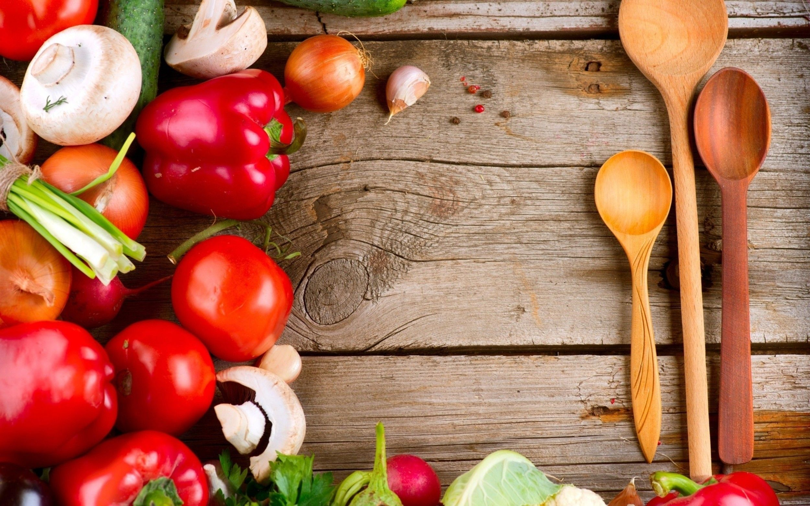

Mano
receptų knyga

Greitas tarkuotų bulvių kugelis keptuvėje
Ingredientai
- 500 gramų bulvių
- 0.5 vieneto svogūnų
- 1 vienetas kiaušinių
- 3 šaukštai aliejaus
- šiek tiek drukos
- šiek tiek pipirų
Paruošimas
- Bulves (žalias, nevirtas) sutarkuoju stambia burokine tarka. Jeigu tarkuojant bulves dubenyje atsiskiria skysčio, jį atsargiai nupilu, bet taip švelniai, bulvių specialiai nenuspaudinėju. Kartais skysčio ir beveik visai neatsiskira, tas labai priklauso nuo pačių bulvių.
- Į bulves įtarkuoju svogūną. Jį tarkuoju smulkia tarka, nes man nepatinka, kai jaučiasi svogūno gabaliukai, bet galite tarkuoti ir stambiau, kaip jums norisi. Į tarkius įmušu kiaušinį, pasūdau, papipirinu ir viską gerai išmaišau.
- Keptuvėje įkaitinu apie porą šaukštų aliejaus, sudedu bulvių masę, mentele suploju į blyną, keletą minučių pakepu atvirai, o po to pridengiu dangčiu ir ant nedidelės ugnies kepu apie 10-20 minučių. Tikslus kepimo laikas labai priklausys nuo keptuvės dydžio ir apkepo storio. Aš paprastai kepu iki apačia gražiai apskrunda, o viršus irgi jau šiek tiek pakeičia spalvą.
- Tada atsargiai mentele apverčiu (verčiant į keptuvę dar įpilu šiek tiek aliejaus) ir gražiai apkepu kitą pusę, kol susidaro traški plutelė. Kartais apversti pavyksta labai gražiai, o kartais tenka kugelį perpjauti pusiau ir tada apversti, tas priklauso nuo bulvių krakmolingumo. Bet kaip beapverstumėte, vis tiek bus labai labai skanu!
- Patiekti galima su kumpio gabalėliais, grietine arba jogurto-varškės-čenako padažiuku, kaip labiau mėgstate.